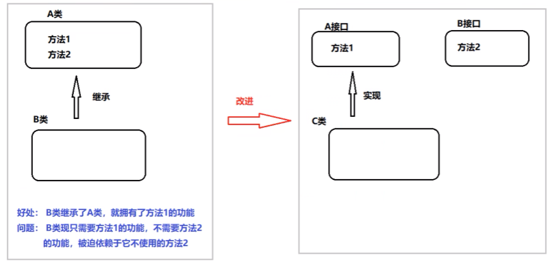
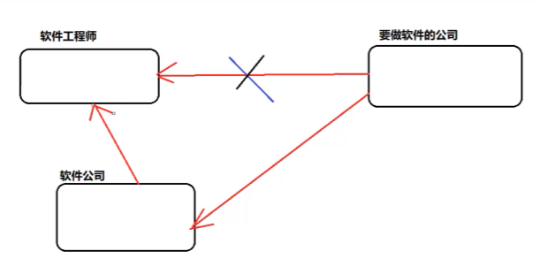

设计模式概述
1-设计模式分类
-
创建型模式
用于描述“怎样创建对象”，它的主要特点是“将对象的创建与使用分离”。GoF（四人组）书中提供了单例、原型、工厂方法、抽象工厂、建造者等 5 种创建型模式。
-
结构型模式
用于描述如何将类或对象按某种布局组成更大的结构，GoF（四人组）书中提供了代理、适配器、桥接、装饰、外观、享元、组合等 7 种结构型模式。
-
行为型模式
用于描述类或对象之间怎样相互协作共同完成单个对象无法单独完成的任务，以及怎样分配职责。GoF（四人组）书中提供了模板方法、策略、命令、职责链、状态、观察者、中介者、迭代器、访问者、备忘录、解释器等 11 种行为型模式。
2-UML图
统一建模语言（Unified Modeling Language，UML）是用来设计软件的可视化建模语言。它的特点是简单、统一、图形化、能表达软件设计中的动态与静态信息。
UML 从目标系统的不同角度出发，定义了用例图、类图、对象图、状态图、活动图、时序图、协作图、构件图、部署图等 9 种图。
2.1 类图概述
类图(Class diagram)是显示了模型的静态结构，特别是模型中存在的类、类的内部结构以及它们与其他类的关系等。类图不显示暂时性的信息。类图是面向对象建模的主要组成部分。
2.2 类图的作用
- 在软件工程中，类图是一种静态的结构图，描述了系统的类的集合，类的属性和类之间的关系，可以简化了人们对系统的理解；
- 类图是系统分析和设计阶段的重要产物，是系统编码和测试的重要模型。
2.3 类图表示法
类的表示方式
在UML类图中，类使用包含类名、属性(field) 和方法(method) 且带有分割线的矩形来表示，比如下图表示一个 Employee 类，它包含 name,age 和 address 这3个属性，以及 work() 方法。
classDiagram
class Employee{
- name : String
- age : int
- address : String
+ work() void
}
属性/方法名称前加的加号和减号表示了这个属性/方法的可见性，UML类图中表示可见性的符号有三种：
-
+：表示 public
-
-：表示 private
-
#：表示 protected
属性的完整表示方式是： 可见性 名称 ：类型 [ = 缺省值]
方法的完整表示方式是： 可见性 名称(参数列表) [ ： 返回类型]
注意：
- 中括号中的内容表示是可选的
- 也有将类型放在变量名前面，返回值类型放在方法名前面
举个例子
classDiagram
class Demo{
+ method() void
- method1() String
# method2(int part1, String par2) int
}
上图Demo类定义了三个方法：
- method() 方法：修饰符为 public，没有参数，没有返回值。
- method1() 方法：修饰符为 private，没有参数，返回值类型为String。
- method2() 方法：修饰符为 protected，接收两个参数，第一个参数类型为 int，第二个参数类型为 String，返回值类型是 int。
类与类之间关系的表示方式
Ⅰ 关联关系
关联关系是对象之间的一种引用关系，用于表示一类对象与另一类对象之间的联系，如老师和学生、师傅和徒弟、丈夫和妻子等。关联关系是类与类之间最常用的一种关系，分为一般关联关系、聚合关系和组合关系。我们先介绍一般关联。
关联又可以分为单向关联，双向关联，自关联。
- 单向关联
classDiagram
class Customer{
- address: Address
}
class Address{ }
Address <-- Customer
在UML类图中单向关联用一个带箭头的实线表示。上图表示每个顾客都有一个地址，这通过让 Customer 类持有一个类型为 Address 的成员变量类实现。
- 双向关联
classDiagram
class Customer{
- products: list~Product~
}
class Product{
- customer: Customer
}
Customer -- Product
从上图中我们很容易看出，所谓的双向关联就是双方各自持有对方类型的成员变量。
在 UML 类图中，双向关联用一个不带箭头的直线表示。上图中在 Customer 类中维护一个 List<Product>，表示一个顾客可以购买多个商品；在 Product 类中维护一个 Customer 类型的成员变量表示这个产品被哪个顾客所购买。
- 自关联
classDiagram
class Node{
- subNode: Node
}
Node --> Node
自关联在UML类图中用一个带有箭头且指向自身的线表示。上图的意思就是 Node 类包含类型为 Node 的成员变量，也就是“自己包含自己”。
Ⅱ 聚合关系
聚合关系是关联关系的一种，是强关联关系，是整体和部分之间的关系。
聚合关系也是通过成员对象来实现的，其中成员对象是整体对象的一部分，但是成员对象可以脱离整体对象而独立存在。例如，学校与老师的关系，学校包含老师，但如果学校停办了，老师依然存在。
在 UML 类图中，聚合关系可以用带空心菱形的实线来表示，菱形指向整体。下图所示是大学和教师的关系图：
classDiagram
class University {
- teas : List~Teacher~
}
class Teacher {
- name : String
+ teach() void
}
University o-- Teacher
Ⅲ 组合关系
组合表示类之间的整体与部分的关系，但它是一种更强烈的聚合关系。
在组合关系中，整体对象可以控制部分对象的生命周期，一旦整体对象不存在，部分对象也将不存在，部分对象不能脱离整体对象而存在。例如，头和嘴的关系，没有了头，嘴也就不存在了。
在 UML 类图中，组合关系用带实心菱形的实线来表示，菱形指向整体。下图所示是头和嘴的关系图：
classDiagram
class Head{
- mouth : Mouth
}
class Mouth {
+ eat() void
}
Head *-- Mouth
Ⅳ 依赖关系👍
依赖关系是一种使用关系，它是对象之间耦合度最弱的一种关联方式，是临时性的关联。在代码中，某个类的方法通过局部变量、方法的参数或者对静态方法的调用来访问另一个类（被依赖类）中的某些方法来完成一些职责。
在 UML 类图中，依赖关系使用带箭头的虚线来表示，箭头从使用类指向被依赖的类。下图所示是司机和汽车的关系图，司机驾驶汽车：
classDiagram
class Driver {
- name : String
+ drive(Car car) void
}
class Car {
+ move() void
}
Driver ..> Car
link Driver "#drive(Car car)" "method"
drive(Car car)
public void drive(Car car) {
car.move();//汽车移动
}Ⅴ 继承关系👍
继承关系是对象之间耦合度最大的一种关系，表示一般与特殊的关系，是父类与子类之间的关系，是一种继承关系。
在 UML 类图中，泛化关系用带空心三角箭头的实线来表示，箭头从子类指向父类。在代码实现时，使用面向对象的继承机制来实现泛化关系。例如，Student 类和 Teacher 类都是 Person 类的子类，其类图如下图所示：
classDiagram
class Person {
- name : String
- age : int
+ speak() void
}
class Student {
- studentNo : String
+ study() void
}
class Teacher {
- teacherNo : String
+ teach() void
}
Person <|-- Student
Person <|-- Teacher
Ⅵ 实现关系
实现关系是接口与实现类之间的关系。在这种关系中，类实现了接口，类中的操作实现了接口中所声明的所有的抽象操作。
在 UML 类图中，实现关系使用带空心三角箭头的虚线来表示，箭头从实现类指向接口。例如，汽车和船实现了交通工具，其类图如图所示。
classDiagram
class Vehicle {
<< Interface >>
+ move() void
}
class Car {
+ move() void
}
class Ship {
+ move() void
}
Vehicle <|.. Car
Vehicle <|.. Ship
3-软件设计原则
在软件开发中，为了提高软件系统的可维护性和可复用性，增加软件的可扩展性和灵活性，程序员要尽量根据6条原则来开发程序，从而提高软件开发效率、节约软件开发成本和维护成本。
3.1 开闭原则
对扩展开放，对修改关闭。在程序需要进行拓展的时候，不能去修改原有的代码，实现一个热插拔的效果。简言之，是为了使程序的扩展性好，易于维护和升级。
想要达到这样的效果，我们需要使用接口和抽象类。
因为抽象灵活性好，适应性广，只要抽象的合理，可以基本保持软件架构的稳定。而软件中易变的细节可以从抽象派生来的实现类来进行扩展，当软件需要发生变化时，只需要根据需求重新派生一个实现类来扩展就可以了。
下面以 搜狗输入法 的皮肤为例介绍开闭原则的应用。
【例】搜狗输入法 的皮肤设计。
分析：搜狗输入法 的皮肤是输入法背景图片、窗口颜色和声音等元素的组合。用户可以根据自己的喜爱更换自己的输入法的皮肤，也可以从网上下载新的皮肤。这些皮肤有共同的特点，可以为其定义一个抽象类（AbstractSkin），而每个具体的皮肤（DefaultSpecificSkin 和 DiySpecificSkin）是其子类。用户窗体可以根据需要选择或者增加新的主题，而不需要修改原代码，所以它是满足开闭原则的。
classDiagram
class AbstractSkin {
+ display() void
}
class SouGouInput {
+ skin : AbstractSkin
+ display() void
}
class DefaultSpecificSkin {
+ display() void
}
class DiySpecificSkin {
+ display() void
}
SouGouInput o-- AbstractSkin
AbstractSkin <|-- DefaultSpecificSkin
AbstractSkin <|-- DiySpecificSkin
Code:
//抽象皮肤类
public abstract class AbstractSkin {
//显示的方法
public abstract void display();
}//默认皮肤
public class DefaultSkin extends AbstractSkin {
public void display() {
System.out.println("默认皮肤");
}
}//diy皮肤
public class DiySkin extends AbstractSkin {
public void display() {
System.out.println("diy皮肤");
}
}//搜狗输入法
public class SougouInput {
private AbstractSkin skin;
public void setSkin(AbstractSkin skin) {
this.skin = skin;
}
public void display() {
skin.display();
}
}//测试类
public class Client {
public static void main(String[] args) {
//1,创建搜狗输入法对象
SougouInput input = new SougouInput();
//2,创建皮肤对象
//DefaultSkin skin = new DefaultSkin();
DiySkin skin = new DiySkin();
//3,将皮肤设置到输入法中
input.setSkin(skin);
//4,显示皮肤
input.display();
}
}3.2 里氏代换原则
里氏代换原则是面向对象设计的基本原则之一。
里氏代换原则：任何基类可以出现的地方，子类一定可以出现。通俗理解：子类可以扩展父类的功能，但不能改变父类原有的功能。换句话说，子类继承父类时，除添加新的方法完成新增功能外，尽量不要重写父类的方法。
如果通过重写父类的方法来完成新的功能，这样写起来虽然简单，但是整个继承体系的可复用性会比较差，特别是运用多态比较频繁时，程序运行出错的概率会非常大。
下面看一个里氏替换原则中经典的一个例子
【例】正方形不是长方形。
在数学领域里，正方形毫无疑问是长方形，它是一个长宽相等的长方形。所以，我们开发的一个与几何图形相关的软件系统，就可以顺理成章的让正方形继承自长方形。
改进前
classDiagram
class Rectangle {
- length : double
- width : double
+ setLength(double length) void
+ getLength() double
+ setWidth(double width) void
+ getWidth() double
}
class RectangleDemo {
+ resize(Rectangle rectangle) void
+ printLengthAndWidth(Rectangle rectangle) void
}
class Square {
+ setWidth(double width) void
+ setLength(double length) void
}
Rectangle <|-- Square: 继承
Rectangle <.. RectangleDemo: 依赖
Code:
//长方形类
public class Rectangle {
private double length;
private double width;
//省略 get set 方法...
}//正方形类
public class Square extends Rectangle {
@Override
public void setLength(double length) {
super.setLength(length);
super.setWidth(length);
}
@Override
public void setWidth(double width) {
super.setLength(width);
super.setWidth(width);
}
}//测试类(注意,由于没有遵循里氏代换原则,该程序会一直进行下去,直至溢出)
public class RectangleDemo {
public static void main(String[] args) {
//创建长方形对象
Rectangle r = new Rectangle();
//设置长和宽
r.setLength(20);
r.setWidth(10);
//调用resize方法进行扩宽
resize(r);
printLengthAndWidth(r); //打印
System.out.println("==================");
//创建正方形对象
Square s = new Square();
//设置长和宽
s.setLength(10);
//调用resize方法进行扩宽
resize(s);
printLengthAndWidth(s); //打印
}
//扩宽方法
public static void resize(Rectangle rectangle) {
//判断宽如果比长小，进行扩宽的操作
while(rectangle.getWidth() <= rectangle.getLength()) {
rectangle.setWidth(rectangle.getWidth() + 1);
}
}
//打印长和宽
public static void printLengthAndWidth(Rectangle rectangle) {
System.out.println(rectangle.getLength());
System.out.println(rectangle.getWidth());
}
}我们运行一下这段代码就会发现，假如我们把一个普通长方形作为参数传入 resize 方法，就会看到长方形宽度逐渐增长的效果，当宽度大于长度,代码就会停止，这种行为的结果符合我们的预期；假如我们再把一个正方形作为参数传入 resize 方法后，就会看到正方形的宽度和长度都在不断增长，代码会一直运行下去，直至系统产生溢出错误。所以，普通的长方形是适合这段代码的，正方形不适合。
我们得出结论：在 resize 方法中，Rectangle 类型的参数是不能被 Square 类型的参数所代替，如果进行了替换就得不到预期结果。因此，Square 类和 Rectangle 类之间的继承关系违反了里氏代换原则，它们之间的继承关系不成立，正方形不是长方形。
如何改进呢？此时我们需要重新设计他们之间的关系。抽象出来一个四边形接口(Quadrilateral)，让 Rectangle 类和 Square 类实现 Quadrilateral 接口
改进后
classDiagram
class Quadrilateral {
<>
+ getLength() double
+ getWidth() double
}
class RectangleDemo {
+ resize(Rectangle rectangle) void
+ printLengthAndWidth(Quadrilateral quadrilateral) void
}
class Square {
- size : double
+ getLength() double
+ getWidth() double
+ setSide(double size) void
+ getSide() double
}
class Rectangle {
- length : double
- width : double
+ setLength(double length) void
+ getLength() double
+ setWidth(double width) void
+ getWidth() double
}
Quadrilateral <|.. Square : 实现
Quadrilateral <|.. Rectangle : 实现
RectangleDemo <.. Quadrilateral : 依赖
RectangleDemo <.. Rectangle : 依赖
Code:
//四边形接口
public interface Quadrilateral {
//获取长
double getLength();
//获取宽
double getWidth();
}//正方形类
public class Square implements Quadrilateral {
//边长
private double side;
//省略 get set...
//重写接口
public double getLength() {
return side;
}
public double getWidth() {
return side;
}
}//长方形类
public class Rectangle implements Quadrilateral {
private double length;
private double width;
//省略 get set...
}//测试类(里氏代换原则)
public class RectangleDemo {
public static void main(String[] args) {
//创建长方形对象
Rectangle r = new Rectangle();
r.setLength(20);
r.setWidth(10);
//调用方法进行扩宽操作
resize(r);
//打印长宽
printLengthAndWidth(r);
}
//扩宽的方法
public static void resize(Rectangle rectangle) {
//判断宽如果比长小，进行扩宽的操作
while (rectangle.getWidth() <= rectangle.getLength()) {
rectangle.setWidth(rectangle.getWidth() + 1);
}
}
//打印长和宽
public static void printLengthAndWidth(Quadrilateral quadrilateral) {
System.out.println(quadrilateral.getLength());
System.out.println(quadrilateral.getWidth());
}
}3.3 依赖倒转原则
高层模块不应该依赖低层模块，两者都应该依赖其抽象；抽象不应该依赖细节，细节应该依赖抽象。简单的说就是要求对抽象进行编程，不要对实现进行编程，这样就降低了客户与实现模块间的耦合。
下面看一个例子来理解依赖倒转原则
【例】组装电脑
现要组装一台电脑，需要配件 cpu，硬盘，内存条。只有这些配置都有了，计算机才能正常的运行。选择 cpu 有很多选择，如 Intel，AMD 等，硬盘可以选择希捷，西数等，内存条可以选择金士顿，海盗船等。
改进前
classDiagram
class Computer {
- hardDisk : XiJieHardDisk
- cpu : IntelCpu
- memory : KingstonMemory
+ setHardDisk(XiJieHardDisk hardDisk) void
+ getHardDisk() XiJieHardDisk
+ setCpu(IntelCpu cpu) void
+ getCpu() IntelCpu
+ setMemory(KingstonMemory memory) void
+ getMemory() KingstonMemory
+ run() void
}
class XiJieHardDisk {
+ save(String data) void
+ get() String
}
class IntelCpu {
+ run() void
}
class KingstonMemory {
+ save() void
}
Computer *-- XiJieHardDisk : 组合
Computer *-- IntelCpu : 组合
Computer *-- KingstonMemory : 组合
Code:
//希捷硬盘
public class XiJieHardDisk {
//存储数据的方法
public void save(String data) {
System.out.println("使用希捷硬盘存储数据为：" + data);
}
//获取数据的方法
public String get() {
System.out.println("使用希捷希捷硬盘取数据");
return "数据";
}
}//Intel cpu
public class IntelCpu {
public void run() {
System.out.println("使用Intel处理器");
}
}//金士顿内存条类
public class KingstonMemory {
public void save() {
System.out.println("使用金士顿内存条");
}
}//计算机
public class Computer {
private XiJieHardDisk hardDisk;
private IntelCpu cpu;
private KingstonMemory memory;
//省略 get set...
public void run() {
System.out.println("运行计算机");
String data = hardDisk.get();
System.out.println("从硬盘上获取的数据是：" + data);
cpu.run();
memory.save();
}
}//依赖倒转原则(反例)-测试类
public class ComputerDemo {
public static void main(String[] args) {
//创建组件对象
XiJieHardDisk hardDisk = new XiJieHardDisk();
IntelCpu cpu = new IntelCpu();
KingstonMemory memory = new KingstonMemory();
//创建计算机对象
Computer c = new Computer();
//组装计算机
c.setCpu(cpu);
c.setHardDisk(hardDisk);
c.setMemory(memory);
//运行计算机
c.run();
}
}上面代码可以看到已经组装了一台电脑，但是似乎组装的电脑的 cpu 只能是 Intel 的，内存条只能是金士顿的，硬盘只能是希捷的，这对用户肯定是不友好的，用户有了机箱肯定是想按照自己的喜好，选择自己喜欢的配件。
根据依赖倒转原则进行改进：
代码我们只需要修改 Computer 类，让 Computer 类依赖抽象（各个配件的接口），而不是依赖于各个组件具体的实现类。
改进后
classDiagram
class Computer {
- hardDisk : HardDisk
- cpu : Cpu
- memory : Memory
+ setHardDisk(HardDisk hardDisk) void
+ getHardDisk() HardDisk
+ setCpu(Cpu cpu) void
+ getCpu() Cpu
+ setMemory(Memory memory) void
+ getMemory() Memory
+ run() void
}
class HardDisk {
<< interface >>
+ save(String data) void
+ get() String
}
class Cpu {
<< interface >>
+ run() void
}
class Memory {
<< interface >>
+ save() void
}
class XiJieHardDisk {
+ save(String data) void
+ get() String
}
class IntelCpu {
+ run() void
}
class KingstonMemory {
+ save() void
}
Computer *-- HardDisk : 组合
Computer *-- Cpu : 组合
Computer *-- Memory : 组合
HardDisk <|.. XiJieHardDisk : 实现
Cpu <|.. IntelCpu : 实现
Memory <|.. KingstonMemory : 实现
Code:
//硬盘接口
public interface HardDisk {
//存储数据
public void save(String data);
//获取数据
public String get();
}//cpu接口
public interface Cpu {
//运行cpu
public void run();
}//内存条接口
public interface Memory {
public void save();
}//希捷硬盘
public class XiJieHardDisk implements HardDisk {
//存储数据的方法
public void save(String data) {
System.out.println("使用希捷硬盘存储数据为：" + data);
}
//获取数据的方法
public String get() {
System.out.println("使用希捷希捷硬盘取数据");
return "数据";
}
}//Intel cpu
public class IntelCpu implements Cpu {
public void run() {
System.out.println("使用Intel处理器");
}
}//金士顿内存条类
public class KingstonMemory implements Memory {
public void save() {
System.out.println("使用金士顿内存条");
}
}//计算机
public class Computer {
private HardDisk hardDisk;
private Cpu cpu;
private Memory memory;
// 省略 get set...
//运行计算机
public void run() {
System.out.println("运行计算机");
String data = hardDisk.get();
System.out.println("从硬盘上获取的数据是：" + data);
cpu.run();
memory.save();
}
}
//依赖倒转原则(改进后)-测试类
public class ComputerDemo {
public static void main(String[] args) {
//创建计算机的组件对象
HardDisk hardDisk = new XiJieHardDisk();
Cpu cpu = new IntelCpu();
Memory memory = new KingstonMemory();
//创建计算机对象
Computer c = new Computer();
//组装计算机
c.setCpu(cpu);
c.setHardDisk(hardDisk);
c.setMemory(memory);
//运行计算机
c.run();
}
}面向对象的开发很好的解决了这个问题，一般情况下抽象的变化概率很小，让用户程序依赖于抽象，实现的细节也依赖于抽象。即使实现细节不断变动，只要抽象不变，客户程序就不需要变化。这大大降低了客户程序与实现细节的耦合度。
3.4 接口隔离原则
客户端不应该被迫依赖于它不使用的方法；一个类对另一个类的依赖应该建立在最小的接口上。

下面看一个例子来理解接口隔离原则
【例】安全门案例
我们需要创建一个saddyfire品牌的安全门，该安全门具有防火、防水、防盗的功能。可以将防火，防水，防盗功能提取成一个接口，形成一套规范。类图如下：
classDiagram
class SafetyDoor {
<< interface >>
+ antiTheft() void
+ fireproof() void
+ waterproof() void
}
class SaddyFireSafetyDoor {
+ antiTheft() void
+ fireproof() void
+ waterproof() void
}
SafetyDoor <|.. SaddyFireSafetyDoor : 实现
上面的设计我们发现了它存在的问题，saddyfire品牌的安全门具有防盗，防水，防火的功能。现在如果我们还需要再创建一个传智品牌的安全门，而该安全门只具有防盗、防水功能呢？很显然如果实现 SafetyDoor 接口就违背了接口隔离原则，那么我们如何进行修改呢？看如下类图：
classDiagram
class AntiTheft {
<< interface >>
+ antiTheft() void
}
class Fireproof {
<< interface >>
+ fireproof() void
}
class Waterproof {
<< interface >>
+ waterproof() void
}
class SaddyFireDoor {
+ antiTheft() void
+ fireproof() void
+ waterproof() void
}
AntiTheft <|.. SaddyFireDoor : 实现
Fireproof <|.. SaddyFireDoor : 实现
Waterproof <|.. SaddyFireDoor : 实现
Code:
//防盗接口
public interface AntiTheft {
void antiTheft();
}//防火接口
public interface Fireproof {
void fireproof();
}//防水接口
public interface Waterproof {
void waterproof();
}//SaddyFire安全门
public class SaddyFireSafetyDoor implements AntiTheft,Fireproof,Waterproof {
public void antiTheft() {
System.out.println("防盗");
}
public void fireproof() {
System.out.println("防火");
}
public void waterproof() {
System.out.println("防水");
}
}//DeeSan安全门
public class DeeSanSafetyDoor implements AntiTheft,Fireproof {
public void antiTheft() {
System.out.println("防盗");
}
public void fireproof() {
System.out.println("防火");
}
}3.5 迪米特法则
迪米特法则又叫最少知识原则。
只和你的直接朋友交谈，不跟“陌生人”说话（Talk only to your immediate friends and not to strangers）。
其含义是：如果两个软件实体无须直接通信，那么就不应当发生直接的相互调用，可以通过第三方转发该调用。其目的是降低类之间的耦合度，提高模块的相对独立性。

迪米特法则中的“朋友”是指：当前对象本身、当前对象的成员对象、当前对象所创建的对象、当前对象的方法参数等，这些对象同当前对象存在关联、聚合或组合关系，可以直接访问这些对象的方法。
下面看一个例子来理解迪米特法则
【例】明星与经纪人的关系实例
明星由于全身心投入艺术，所以许多日常事务由经纪人负责处理，如和粉丝的见面会，和媒体公司的业务洽淡等。这里的经纪人是明星的朋友，而粉丝和媒体公司是陌生人，所以适合使用迪米特法则。
类图如下：
classDiagram
class Agent {
- star : Star
- fans : Fans
- company : Company
+ setStar(Star star) void
+ setFans(Fans fans) void
+ setCompany(Company company) void
+ meetinf() void
+ business() void
}
class Star {
- name : String
+ Star(String name)
+ getName() String
}
class Fans {
- name : String
+ Fans(String name)
+ getName() String
}
class Company {
- name : String
+ Company(Strng name)
+ getName() void
}
Agent o-- Star : 聚合
Agent o-- Fans : 聚合
Agent o-- Company : 聚合
Code:
//明星类
public class Star {
private String name;
public Star(String name) {
this.name = name;
}
//省略 get
}//粉丝类
public class Fans {
private String name;
public Fans(String name) {
this.name = name;
}
//省略 get
}//媒体公司类
public class Company {
private String name;
public Company(String name) {
this.name = name;
}
//省略 get
}
//经纪人类
public class Agent {
private Star star;
private Fans fans;
private Company company;
//省略 set
//和粉丝见面的方法
public void meeting() {
System.out.println(star.getName() + "和粉丝" + fans.getName() + "见面");
}
//和媒体公司洽谈的方法
public void business() {
System.out.println(star.getName() + "和" + company.getName() + "洽谈");
}
}//迪米特法则测试类
public class Client {
public static void main(String[] args) {
//创建经纪人类
Agent agent = new Agent();
//创建明星对象
Star star = new Star("林青霞");
agent.setStar(star);
//创建粉丝对象
Fans fans = new Fans("李四");
agent.setFans(fans);
//创建媒体公司对象
Company company = new Company("黑马媒体公司");
agent.setCompany(company);
agent.meeting();//和粉丝见面
agent.business();//和媒体公司洽谈业务
}
}3.6 合成复用原则
合成复用原则是指：尽量先使用组合或者聚合等关联关系来实现，其次才考虑使用继承关系来实现。
通常类的复用分为继承复用和合成复用两种。
继承复用虽然有简单和易实现的优点，但它也存在以下缺点：
- 继承复用破坏了类的封装性。因为继承会将父类的实现细节暴露给子类，父类对子类是透明的，所以这种复用又称为“白箱”复用。
- 子类与父类的耦合度高。父类的实现的任何改变都会导致子类的实现发生变化，这不利于类的扩展与维护。
- 它限制了复用的灵活性。从父类继承而来的实现是静态的，在编译时已经定义，所以在运行时不可能发生变化。
采用组合或聚合复用时，可以将已有对象纳入新对象中，使之成为新对象的一部分，新对象可以调用已有对象的功能，它有以下优点：
- 它维持了类的封装性。因为成分对象的内部细节是新对象看不见的，所以这种复用又称为“黑箱”复用。
- 对象间的耦合度低。可以在类的成员位置声明抽象。
- 复用的灵活性高。这种复用可以在运行时动态进行，新对象可以动态地引用与成分对象类型相同的对象。
下面看一个例子来理解合成复用原则
【例】汽车分类管理程序
改进前
汽车按“动力源”划分可分为汽油汽车、电动汽车等；按“颜色”划分可分为白色汽车、黑色汽车和红色汽车等。如果同时考虑这两种分类，其组合就很多。类图如下：
classDiagram
class Car {
+ move() void
}
class PetrolCar {
+ move() void
}
class ElectricCar {
+ move() void
}
class RedPeroCar {
+ move() void
}
class WhitePetrolCar {
+ move() void
}
class RedElectricCar {
+ move() void
}
class WhiteElectricCar {
+ move() void
}
Car <|-- PetrolCar
Car <|-- ElectricCar
PetrolCar <|-- RedPeroCar
PetrolCar <|-- WhitePetrolCar
ElectricCar <|-- RedElectricCar
ElectricCar <|-- WhiteElectricCar
改进后
从上面类图我们可以看到使用继承复用产生了很多子类，如果现在又有新的动力源或者新的颜色的话，就需要再定义新的类。我们试着将继承复用改为聚合复用看一下。
classDiagram
class Car {
# color : Color
+ move() void
}
class PetrolCar {
+ move() void
}
class ElectricCar {
+ move() void
}
class Color {
<< interface >>
}
class Red { }
class White { }
Car <|-- PetrolCar : 继承
Car <|-- ElectricCar : 继承
Car o-- Color : 聚合
Color <|.. Red : 实现
Color <|.. White : 实现